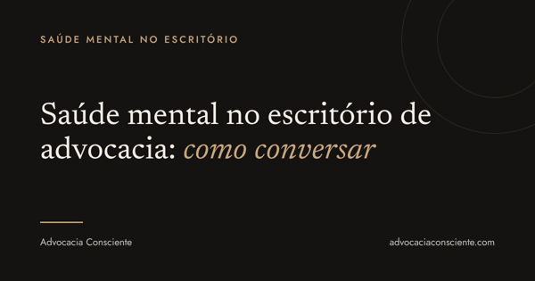

Você percebe que alguém da equipe mudou. Entrega no limite, fala menos nas reuniões, responde mensagens de madrugada. E fica a dúvida: falo ou espero?
Você não está sozinho nessa dúvida. Na Pesquisa de Saúde Mental 2026 da Aon com a Telus Health, quase metade dos gestores disse não saber o que fazer quando alguém da equipe enfrenta dificuldades de saúde mental. Do outro lado, 63% dos brasileiros temem que falar sobre o assunto prejudique a carreira.
Na advocacia, prazos curtos e a cultura de estar sempre disponível tornam esse silêncio ainda mais comum.
Antes da conversa
- Escolha um lugar reservado e um horário sem pressa
- Separe fatos de impressões: "você entregou as duas últimas peças no limite do prazo" é diferente de "você está desleixado"
- Saiba de antemão o que o escritório pode oferecer: ajuste de carga, prazo, folga
Três frases para começar
- "Percebi que você está diferente nas últimas semanas. Como está a carga de trabalho?"
- "O que está pesando mais agora?"
- "O que ajudaria você nas próximas duas semanas?"
Depois de perguntar, ouça. A conversa não precisa terminar com uma solução. Precisa terminar com a pessoa sabendo que pode voltar a falar.
Seu escritório está em dia com a NR-1? Baixe o checklist gratuito com 10 perguntas.
Baixar o checklistO que evitar
- Dar diagnóstico ou usar termos clínicos
- Falar do assunto na frente da equipe
- Prometer o que o escritório não pode cumprir
- Transformar a conversa em avaliação de desempenho
Se a pessoa relatar sofrimento intenso, o caminho é indicar um profissional de saúde. O papel do gestor é acolher e ajustar o trabalho, não tratar.
Por que isso também é gestão
Desde 26/05/2026, a NR-1 exige que empregadores incluam os riscos psicossociais no gerenciamento de riscos do trabalho. Em 24/09/2026, o STF prorrogou por mais 90 dias a suspensão das multas, mas a obrigação continua (ADPF 1316). Sobrecarga e falta de apoio da liderança estão entre esses riscos. Saber conversar é parte de gerenciá-los.
Baixe o checklist da NR-1 para escritórios de advocacia.
Baixar o checklistPerguntas frequentes
Posso perguntar diretamente se a pessoa está com algum problema de saúde mental?
Melhor não. Pergunte sobre o trabalho e sobre como ela está. Ela decide o que contar.
E se a pessoa negar que algo está errado?
Respeite. Diga que a porta fica aberta e volte a perguntar em outro momento.
O escritório precisa fazer algo além da conversa?
Escritórios com empregados devem gerenciar os riscos psicossociais pela NR-1. A conversa é um passo, não substitui esse gerenciamento.
Conteúdo educativo. Não substitui avaliação de profissional de saúde.
Fontes
- Pesquisa de Saúde Mental 2026, Aon e Telus Health, citada no Diário do Comércio (15/09/2026)
- Prorrogação da suspensão das multas da NR-1, ADPF 1316 (STF, 24/09/2026)
Fontes consultadas em 21/10/2026.

Advogada, autora do livro Advocacia Consciente (Freitas Bastos) e criadora do Programa Advocacia Consciente (PAC).